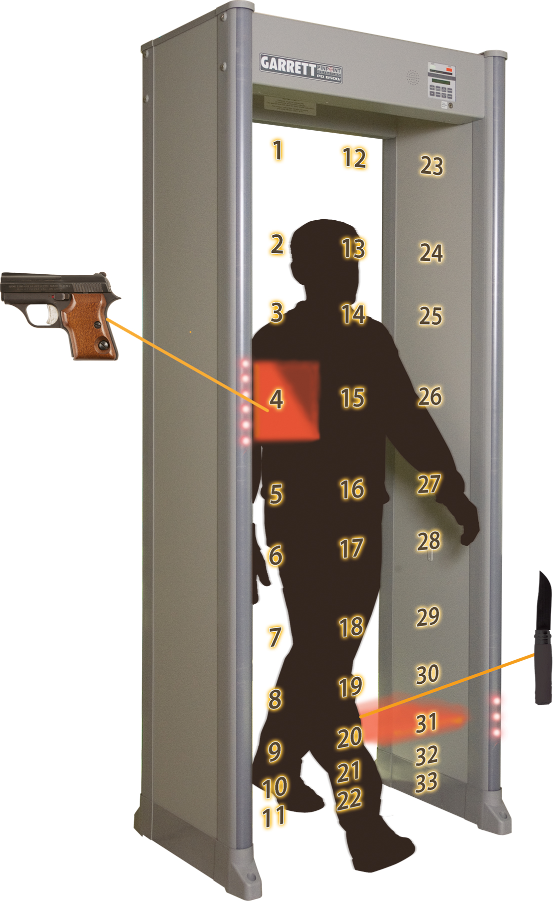
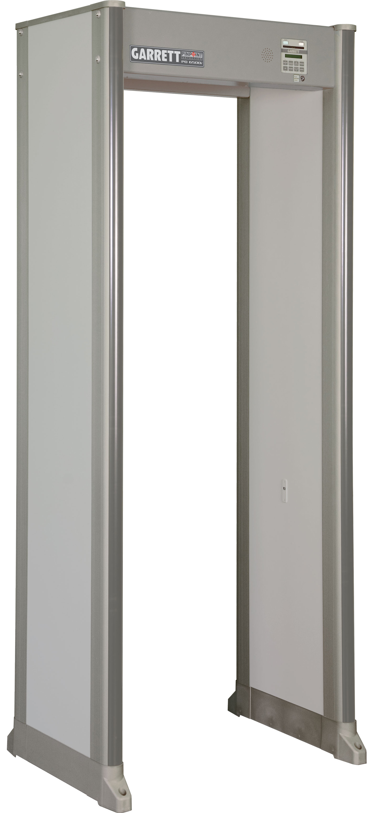
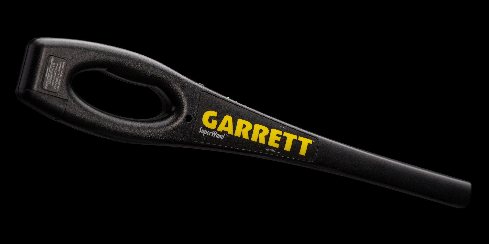
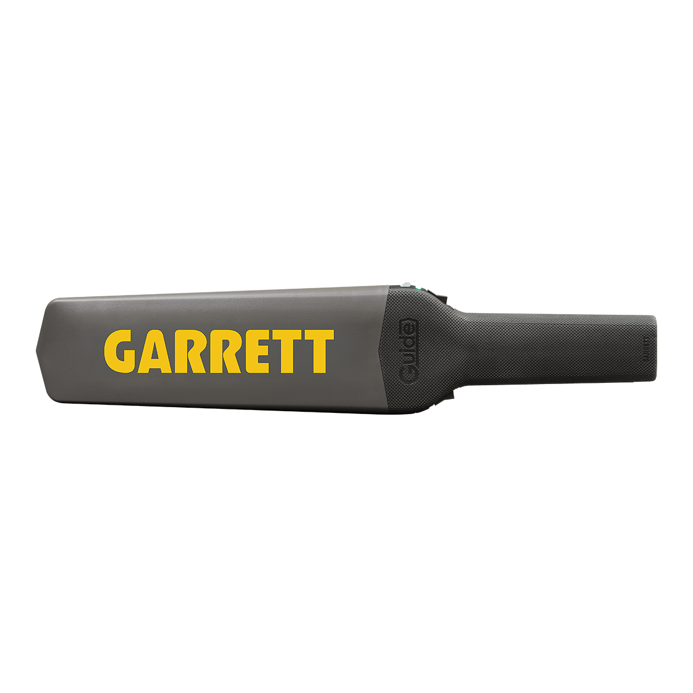

Quem já passou por um aeroporto, estádio ou grande evento sabe bem: a triagem de segurança começa com o portal detector de metais e, quando necessário, com o detector portátil hand-held. Mas como exatamente essa tecnologia funciona — e por que a Garrett é a fornecedora de escolha em mais de 100 países?
Portal Garrett PD 6500i em operação durante controle de acesso em evento esportivo
1. Como Funciona um Portal Walk-Through
Os portais walk-through (pórticos de passagem) funcionam com base no princípio da indução eletromagnética pulsada ou da tecnologia de frequências múltiplas simultâneas. Em termos simples:
- O portal emite um campo eletromagnético constante entre dois painéis (transmissor e receptor).
- Quando um objeto metálico passa pelo campo, ele perturba o fluxo eletromagnético.
- O detector analisa a perturbação em milissegundos, identifica o tamanho, forma e tipo de metal.
- Caso detecte algo suspeito, dispara o alarme sonoro e/ou visual com indicação da zona do corpo.
Portais avançados como o Garrett PD 6500i possuem 33 zonas de detecção independentes ao longo do corpo humano, permitindo identificar com precisão a localização do objeto — tornozelo, cintura, ombro — sem alarmes desnecessários por botões de calça ou fivelas de cinto.

As 33 zonas de detecção independentes do PD 6500i identificam com precisão onde o objeto está no corpo
2. Portais Walk-Through Garrett — Linha Completa
A Garrett oferece três portais walk-through para diferentes perfis de instalação e exigência operacional. Cada modelo foi desenvolvido para um conjunto específico de ambientes e requisitos de segurança:



| Tipo | Uso Principal | Modelos Garrett |
|---|---|---|
| Walk-Through (Portal) | Aeroportos, tribunais, presídios, eventos | Paragon, PD 6500i, Multi Zone |
| Hand-Held (Portátil) | Triagem secundária, revistas manuais | Super Scanner V, SuperWand, GUIDE |
3. Detectores Hand-Held: Triagem de Precisão
Quando o portal emite um alarme, o agente de segurança utiliza um detector portátil para localizar com precisão exata o objeto no corpo da pessoa. O hand-held é uma ferramenta de triagem secundária essencial, projetado para uso contínuo durante longos turnos operacionais.
Características fundamentais num hand-held profissional:
- Bateria de longa duração: modelos Garrett operam por até 200 horas com uma única pilha 9V
- Alerta vibratório silencioso: essencial em ambientes ruidosos como shows e terminais
- Resistência a quedas e umidade: uso intensivo exige construção robusta
- Sensibilidade ajustável: permite configurar o limiar de detecção conforme o ambiente
- Resposta rápida: detecta e sinaliza em frações de segundo para agilizar a triagem
A linha Garrett oferece três opções de detectores hand-held para segurança, cada um com características distintas:


GUIDE — O Detector Hand-Held de Nova Geração
O Garrett GUIDE é a mais recente incorporação à linha de segurança, com tecnologia avançada que representa uma evolução significativa em relação aos modelos anteriores:

Garrett GUIDE: design moderno e tecnologia avançada para segurança profissional
- Display LED indicativo: mostra visualmente a intensidade e localização do sinal
- Sensibilidade superior: detecta objetos metálicos menores com maior precisão
- Ergonomia aprimorada: design remodelado para longas jornadas sem fadiga
- Resistência robusta: construção reforçada para ambientes operacionais intensivos
4. Onde São Usados no Brasil
Os equipamentos de detecção Garrett estão presentes nos mais variados ambientes de segurança no território brasileiro:
- Aeroportos e terminais: triagem de passageiros e bagagens de mão
- Estádios e arenas: controle de acesso em eventos esportivos e shows
- Fóruns e tribunais: segurança de instalações do judiciário
- Presídios e unidades prisionais: prevenção de entrada de objetos proibidos
- Escolas e universidades: segurança em ambientes educacionais
- Bancos e agências: proteção de instalações financeiras
- Eventos corporativos e governamentais: controle de acesso em conferências e cerimônias

Instalação do portal Garrett PD 6500i em ambiente de segurança de alta demanda
5. Conclusão
Os detectores de metais usados em segurança são muito mais sofisticados do que parecem — combinam eletromagnetismo avançado, processamento digital em tempo real e design ergonômico para uso intensivo. A Garrett lidera esse mercado há décadas porque alia confiabilidade, precisão e baixo custo operacional.
A linha completa Garrett para segurança — portais Paragon, PD 6500i e Multi Zone, e hand-helds Super Scanner V, SuperWand e GUIDE — cobre desde pequenas instalações até os mais exigentes ambientes de segurança do país.
Se sua empresa ou instituição precisa de soluções de detecção para segurança, entre em contato com a Garrett Brasil para uma consultoria técnica especializada e sem compromisso.